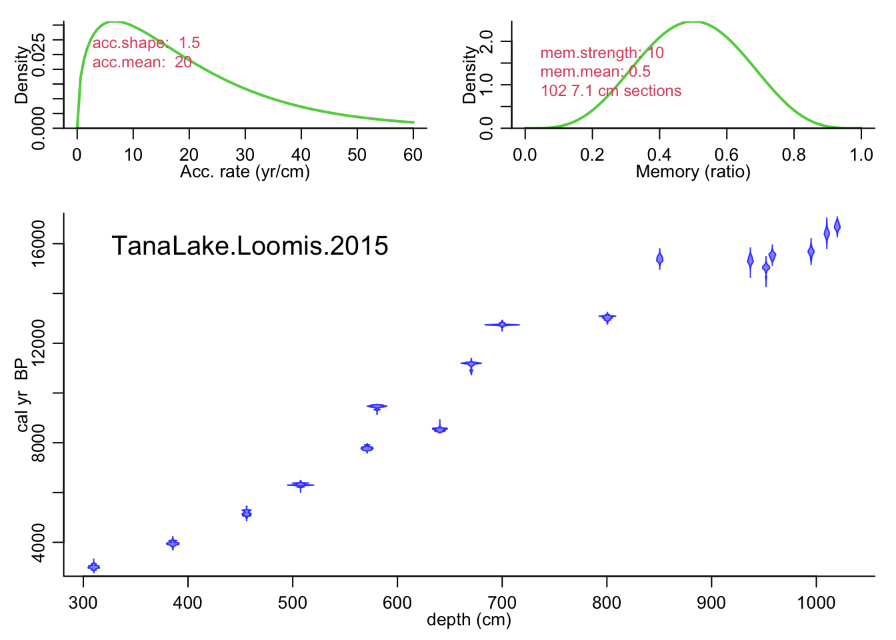
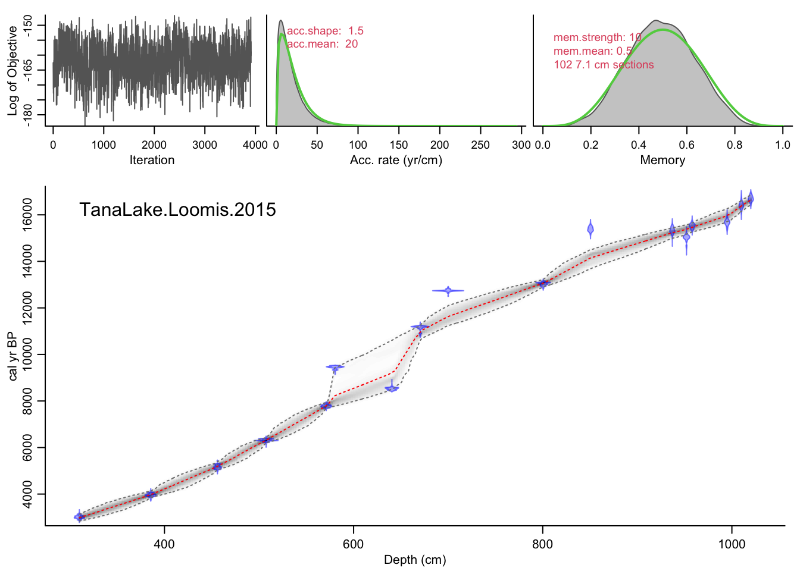

Chapter 4 Age modelling in geoChronR
geoChronR quantifies the uncertainties due to time uncertainty by taking advantage of ensembles of plausible age histories for one or more datasets. This means that often an early step in the geoChronR workflow is generating age ensembles. Most modern age modelling approaches quantify uncertainties using methods that rely on ensembles, however preserving, extracting, and storing those uncertainties for subsequent analysis can be challenging. geoChronR helps with this! In this chapter, we’ll go through the workflow of generating age models with four methods that are integrated into geoChronR
library(lipdR)
library(geoChronR)## Registered S3 method overwritten by 'spatstat.geom':
## method from
## print.boxx cli## Welcome to geoChronR version 1.0.14!## ##
## Attaching package: 'geoChronR'## The following objects are masked from 'package:lipdR':
##
## createTSid, pullTsVariablelibrary(ggplot2)
library(magrittr)
tana <- readLipd("https://lipdverse.org/Temp12k/1_0_2/TanaLake.Loomis.2015.lpd")## [1] "reading: TanaLake.Loomis.2015.lpd"4.1 Bacon
tana <- runBacon(tana,
lab.id.var = 'LabID',
age.14c.var = 'age14C',
age.14c.uncertainty.var = 'age14CUnc',
age.var = 'age',
age.uncertainty.var = '1SD',
depth.var = 'depth',
reservoir.age.14c.var = NULL,
reservoir.age.14c.uncertainty.var = NULL,
rejected.ages.var = NULL,
accept.suggestions = TRUE) Great! If all went well Bacon ran, and geoChronR grabbed the ensembles for future use. What kind of future use? Well, let’s start with plotting.
The plotChronEns() function is great for making, quick, but pretty nice, figures to show an age model ensemble. It has a lot of options for customization (check out ?plotChronEns). Lastly, what it returns is a ggplot2 object, meaning that you can further customize it! Let’s see how it goes!
plotChronEns(tana) + ggtitle("Tana Lake - default Bacon model")## [1] "Found it! Moving on..."
## [1] "Found it! Moving on..."
## [1] "plotting your chron ensemble. This make take a few seconds..."## Scale for 'x' is already present. Adding another scale for 'x', which will
## replace the existing scale. That was easy! But you’ll have to explore the options to fully customize your figure.
That was easy! But you’ll have to explore the options to fully customize your figure.
Exercise 4.1 Explore the parameter choices in plotChronEns. Can you a) change the confidence interval colors and b) quantiles? c) Change the type of distribution plotted for the dates d) and their color and transparency? e) what does truncate.dist do?
4.2 Bchron
tana <- runBchron(tana,
iter = 10000,
model.num = 2,
lab.id.var = 'LabID',
age.14c.var = 'age14C',
age.14c.uncertainty.var = 'age14CUnc',
age.var = 'age',
age.uncertainty.var = '1SD',
depth.var = 'depth',
reservoir.age.14c.var = NULL,
reservoir.age.14c.uncertainty.var = NULL,
rejected.ages.var = NULL)plotChronEns(tana,model.num = 2,truncate.dist = .0001) + ggtitle("Tana Lake - default Bchron model")## [1] "Found it! Moving on..."
## [1] "Found it! Moving on..."
## [1] "plotting your chron ensemble. This make take a few seconds..."## Scale for 'x' is already present. Adding another scale for 'x', which will
## replace the existing scale.
4.3 Oxcal
tana <- runOxcal(tana,model.num = 3,
lab.id.var = 'LabID',
age.14c.var = 'age14C',
age.14c.uncertainty.var = 'age14CUnc',
age.var = 'age',
age.uncertainty.var = '1SD',
depth.var = 'depth',
reservoir.age.14c.var = NULL,
reservoir.age.14c.uncertainty.var = NULL,
rejected.ages.var = NULL,
events.per.unit.length = .05,
depth.interval = 20)## Oxcal is installed but Oxcal executable path is wrong. Let's have a look...## Oxcal path set!## [1] "Found it! Moving on..."
## [1] "Found it! Moving on..."
## Looking for age uncertainty
## No variable called sd, or choosing is enforced (always.choose = TRUE)
## Looking for laboratory ID
## [1] "Found it! Moving on..."
## Looking for radiocarbon ages
## [1] "Found it! Moving on..."
## Looking for 1-sigma radiocarbon age uncertainty (+/-)
## [1] "Found it! Moving on..."
## Looking for calibrated/calendar ages
## [1] "Found it! Moving on..."
## Looking for 2-sigma calibrated age uncertainty (+/-)
## [1] "Found it! Moving on..."
## Looking for depth or position
## [1] "Found it! Moving on..."
## Looking for radiocarbon reservoir age offsets (deltaR)
## radiocarbon reservoir age offsets (deltaR) does not seem to exist, moving on.
## Looking for radiocarbon reservoir age offsets (deltaR) uncertainties
## radiocarbon reservoir age offsets (deltaR) uncertainties does not seem to exist, moving on.
## Looking for rejected ages
## rejected ages does not seem to exist, moving on.
## [1] "Variable choices for reuse..."
## For future reference: here are the options you chose:
## Find later with getLastVarString()
## lab.id.var = 'LabID', age.14c.var = 'age14C', age.14c.uncertainty.var = 'age14CUnc', age.var = 'age', age.uncertainty.var = '1SD', depth.var = 'depth', reservoir.age.14c.var = NULL, reservoir.age.14c.uncertainty.var = NULL, rejected.ages.var = NULL,
## Oxcal is now running, depending on your settings and your computer, this may take a few minutes to several hours. The model is complete when a table of model diagnostics appears.plotChronEns(tana,model.num = 3,truncate.dist = .0001) + ggtitle("Tana Lake - Oxcal model")## [1] "Found it! Moving on..."
## [1] "Found it! Moving on..."
## [1] "plotting your chron ensemble. This make take a few seconds..."## Scale for 'x' is already present. Adding another scale for 'x', which will
## replace the existing scale.
4.3.1 Let’s compare these models.
First, lets use selectData() to pull the depth and ageEnsemble variables for each model. The selectData() function is introduced in section .
ensBacon <- selectData(tana,
var.name = "ageEnsemble",
paleo.or.chron = "chronData",
model.num = 1,
table.type = "ensemble")
depthBacon <- selectData(tana,
var.name = "depth",
paleo.or.chron = "chronData",
model.num = 1,
table.type = "ensemble")
ensBchron <- selectData(tana,
var.name = "ageEnsemble",
paleo.or.chron = "chronData",
model.num = 2,
table.type = "ensemble")
depthBchron <- selectData(tana,
var.name = "depth",
paleo.or.chron = "chronData",
model.num = 2,
table.type = "ensemble")
ensOxcal <- selectData(tana,
var.name = "ageEnsemble",
paleo.or.chron = "chronData",
model.num = 3,
table.type = "ensemble")
depthOxcal <- selectData(tana,
var.name = "depth",
paleo.or.chron = "chronData",
model.num = 3,
table.type = "ensemble")Now that we have all the data extracted, we can use the plotTimeseriesEnsRibbons() function to plot each of the modeled age-depth relationships and their uncertainties. We will use the magrittr “pipe” function or %>% to pass the output of one plot into the next to build up a complex figure. We’ll also use different colors and transparencies so we can distinguish the different models.
plotTimeseriesEnsRibbons(X = ensBacon,Y = depthBacon) %>%
plotTimeseriesEnsRibbons(X = ensBchron,Y = depthBchron,
alp = .7,
color.high = "DarkGreen",
color.line = "Green") %>%
plotTimeseriesEnsRibbons(X = ensOxcal,Y = depthOxcal,
alp = .7,
color.high = "DarkBlue",
color.line = "Blue") %>%
plotModelDistributions(tana,add.to.plot = .) + #here we use the ggplot
scale_y_reverse() All geoChronR plotting functions return ggplot2 objects, so we can modify the scale by adding a layer using
All geoChronR plotting functions return ggplot2 objects, so we can modify the scale by adding a layer using + using the ggplot2 model.
Exercise 4.2 Where do the models agree? Where do they differ? Do you think one is better than the others?
After you’ve answered, click for next step
The OxCal model is considerably more flexible than the Bacon model, which leaves outliers off the main trend. If you wanted to make the OxCal model less flexible, which parameter(s) would you change? Alternatively, if you wanted to make the Bacon model more flexible, which parameter(s) would you change in the Bacon model?
Try making a change to parameters in either Bacon or OxCal to make the models more similar (note, Bacon runs much faster, so I’d probably try that one first)
Finally, how should you decide whether a more or less flexible model is better?4.3.2 Creating a multimodel ensemble
Sometimes, there are good reason to believe that because of it’s design, or underlying assumptions, one model may be superior to the others, in which case you should choose that model. However, frequently, it’s unclear which model to choose, or to objectively pick on model over another. In this case, you might want to create a multimodel ensemble that incorporates model structural uncertainty into your uncertainty structure. This is pretty straightforward in geoChronR.
Here, we’ll create a fourth model that combines these three into a “Grand Ensemble” using createMultiModelEnsemble
tana <- createMultiModelEnsemble(tana,
models.to.combine = 1:3,
depth.interval =10,
n.ens = 1000)## [1] "Found it! Moving on..."
## [1] "Found it! Moving on..."Hint #1
First plot the chronEns, then use the “add.to.plot” parameter to add in the distributions.Hint #2
Something with this structure is what you’re looking for
plotChronEns() %>% plotModelDistributions()Exercise 4.4 Now that you’ve got plotting working, try changing the choices made in createMultiModelEnsemble. Specifically, what is the impact of changing, depth.interval, n.ens, or depth.sequence? Use the documentation for help!
Exercise 4.5 Add your final multi model ensemble to the figure that showed the three original age models above. Does it look like a combination of the three?
4.3.3 Mapping the age ensemble to the paleoData measurements
Great, our LiPD file now has an age ensemble (actually 4 age ensembles!) that we can use in subsequent analysis. We could write out our LiPD file right now using lipdR::writeLipd(tana), for future work, or share with a colleague, and when we load it back in, all of our ensembles will be there, ready to go!
But for now, let’s think about the next step in our analysis. We want to look at our paleoenvironmental data in the context of the age uncertainties. So let’s take a look at the paleoData!
#First, create a tibble from the paleoata
paleo <- extractTs(tana) %>% ts2tibble()
#Now you can explore that much more easily - here are all the variable names.
paleo$paleoData_variableName## [1] "core" "year" "age" "Section"
## [5] "Composite_depth" "temperature" "error"It looks like depth in this dataset is “Composite_depth,” and the median age vector is here, but the age ensemble is not! Why not? Well, the ensemble chronology in a model may or may not have values corresponding to the paleoclimatic or paleoenvironmental measurements in paleoData. Each of our models have different depth scales, and they’re all different than our paleoclimate data. So we need to “map” the model ensemble values to a measurement table in paleoData, so we can estimate the age uncertainty on each value. To do this we use the mapAgeEnsembleToPaleoData() function.
tana <- mapAgeEnsembleToPaleoData(tana,model.num = 4,paleo.depth.var = "Composite_depth", age.var = "ageEnsemble")Now let’s look at the paleoData again:
paleo <- extractTs(tana) %>% ts2tibble()
paleo$paleoData_variableName## [1] "core" "year" "age" "Section"
## [5] "Composite_depth" "temperature" "error" "ageEnsemble"Great, now we have an ageEnsemble variable in our paleoData (and our tibble!)
4.3.4 Creating a timeseries plot as a spaghetti plot of lines
Let’s visualize the reconstructed temperature with age uncertainties.
First, we’ll use selectData() again to get our mapped ensemble and temperature data:
tana.ae <- selectData(tana,var.name = "ageEnsemble")## [1] "Found it! Moving on..."tana.temp <- selectData(tana,var.name = "temperature")## [1] "Found it! Moving on..."OK, we’re ready to plot it. There are a few ways to visualize ensemble data. The simplest is to just plot multiple instances of the line. Here we will just plot the temperature data against 50 random ensemble members.
tana.ts.plot <- plotTimeseriesEnsLines(X = tana.ae,Y = tana.temp,alp = 0.05,n.ens.plot = 50,color = "blue")
print(tana.ts.plot)
4.3.5 Creating a timeseries plot with a ribbon confidence intervals
We can also plot this as a ribbon plot of quantiles
#hulu.ts.plot <- plotTimeseriesEnsRibbons(X = hulu.ae,Y = hulu.d18O,n.bins = 1000)+xlim(c(35000,75000))
#print(hulu.ts.plot)4.3.6 Combining the two kinds of timeseries plots
Or a combination of the two with the “add.to.plot option”
#hulu.ts.plot <- plotTimeseriesEnsLines(X = hulu.ae,Y = hulu.d18O,alp = 0.1,n.ens.plot = 10,color = "red",add.to.plot = hulu.ts.plot)+ggtitle("Hulu Cave d18O")
#print(hulu.ts.plot)